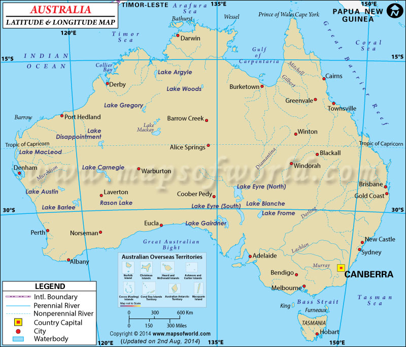

Földrajza
Ausztrália a világ legkisebb kontinense és egyben a legnagyobb sziget. Földünk hatodik legnagyobb területű országa, emellett Óceánia legnagyobb országa is. Az ország az Indiai-óceán és a Csendes-óceán között helyezkedik el, északon Indonéziával, nyugaton pedig Új-Zélanddal határos.

Koordinátái
Ausztrália földrajzi koordinátái: 25° S, 133° E
